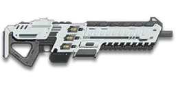

← Back to the HSG-400 comparison
← Back to the HSG-400 comparison
Sage Guide · Nanite Systems · Light Assault / Combat Medic / Engineer / Heavy Assault
The Operative heavy shotgun: heavy pump-action damage — 11 pellets, a one-shot kill inside 5 m — in a magazine-fed semi-auto with no pump to work. The catch is the 800 ms lock after every shot: no reloading, no weapon switching until it clears.
The one-line verdict: The HSG-400 is heavy pump-action damage without the pump: 11 pellets a pull and a one-shot kill inside 5 m, fed from a box magazine. Its price is the 800 ms lock after every shot — you cannot reload or switch weapons until it clears, so the sidearm finish other pumps rely on is not available here.

The HSG-400 · Nanite Systems · 4-shell magazine
Picture the scene, because you've probably lived it: you're sprinting across a courtyard, an enemy appears, and you do everything at once — yank the trigger while you're still running, then press aim-down-sights (ADS) a split-second later, finger still down. The sight picture snaps in, it looks precise… and your pellets spray everywhere except the man in your crosshair. He kills you. It feels like the game cheated. It didn't — here's what actually happened.
You started firing from a sprint, from the hip. Sprinting is the least accurate state in the game: your cone of fire starts maxed out, the widest it can ever be. Every pull you fire from the hip throws 11 pellets across that wide cone — and on a pump gun there is no burst to control, only one pull at a time.
Then you pressed ADS mid-hold — and nothing tightened. Aiming down sights does not shrink a pump gun's pellet spread: it is 4° from the hip and 4° aimed, the same cone either way. The scope only gives you a precise picture; the pellets keep flying out of the wide cone you built while running. That's the whole mystery: accurate-looking aim, wildly inaccurate gun.
And the pump makes it worse: hammering the trigger does not make the next shell come any faster. After every pull the gun owns a 0.80 s cycle — 800 ms of refire, during which you cannot reload or swap weapons — and spam-clicking through it fires nothing at all. Your first half-second of fire was pure confetti, and the second pull was already late.
1 · Feet. Let go of sprint (and the trigger, if you're already holding it). Stop, or drop into a strafe — anything but a full sprint. About 0.3 s for the gun to settle.
2 · Sight. Press ADS and let the sight come up (~0.15 s) — but only if the target is past 5 m. Inside 5 m, skip this beat entirely: the one-shot kill lives at hipfire range, and aiming only costs you time and a quarter of your move speed.
3 · Trigger. Now fire — one deliberate pull, aimed at the centre of the chest. Then wait out the lock, re-aim, and pull again. Never spam: the cycle is the gun, and the re-aim between pulls is where the second shot actually lands.
Stop → aim → fire. If you take one habit from this entire page, take this one. You'll practise exactly this rhythm in the pump-timing drill in section 04.
Four beats, left to right — the same mistake the cards above describe, drawn out.
1 · SprintingYour cone starts maxed at 7.0° — the widest it can ever be.
2 · Trigger heldFiring from the hip while running — every shot adds bloom.
3 · ADS, mid-holdThe sight looks precise — but aiming down sights does not reset bloom.
4 · The sprayBullets fly out of the wide cone you built. The enemy walks away.
Same fight, done right. Each beat has a job, and the order is the whole lesson.
1 · StopLet go of sprint (and the trigger). About 0.3 s for the gun to settle.
2 · AimPress ADS and let the sight come up (~0.15 s).
3 · FireNow fire — from the aimed cone. First shots land where the dot points.
The exception — under ~8 m, skip the whole danceHipfire works, no ADS needed, and stopping is optional. Keep moving, strafe, and let the hipfire ring do the work.
Every enemy infantry has 1,000 health (500 shield + 500 health). Your pull throws 11 pellets at 100 damage each up close, fading to 63 damage each at 18 m. Headshots count 1.5× per pellet, leg shots 0.9×. Count pulls, never single pellets — one pull is one trigger pull, and the table below assumes every pellet lands.
| Range | Damage / pellet | Pellets to kill | Head | Chest | Legs | Chest vs shielded Heavy | Best-case TTK |
|---|---|---|---|---|---|---|---|
| 0–5 m | 100 | 10 | 1 | 1 | 2 | 2 | 0.00 s |
| 5–10 m | 85.8 | 12 | 1 | 2 | 2 | 2 | 0.80 s |
| 10–18 m | 63 | 16 | 1 | 2 | 2 | 3 | 0.80 s |
| Past 18 m | 63 | 16 | 1 | 2 | 2 | 3 | 0.80 s |
Perfect-accuracy times to kill use the real cycle — 0.80 s between pulls — never the 400 RPM figure on the stat sheet (see the cycle box below). A shielded Heavy has 1,450 health (1,000 + 450 overshield). A MAX has 2,000 health but resists 80% of small-arms damage, so it effectively needs 10,000 damage: 10 chest pulls up close, 15 at minimum damage. In real fights you'll land maybe two-thirds of your pellets — still, this is why the centre of the chest, not the head, is the aim point on a pump (section 03).
Full power to 5 m, then a steady slide to minimum at 18 m. Damage shown per pellet — multiply by 11 for the whole pull.
Flechette Ammunition replaces the buckshot with dart-like flechettes that triple the maximum and minimum damage range (full damage to 15 m, fading to minimum at 54 m) — but fire 8 pellets instead of 11. 8 × 100 = 800 damage a pull, which is short of 1,000 health: the one-shot kill is gone at every range. Two pulls kill a standard target anywhere inside 54 m, and headshots still kill in one pull out to about 30 m.
| Range | Damage / pellet | Chest pulls | Head pulls | Best-case TTK |
|---|---|---|---|---|
| 0–15 m | 100 | 2 | 1 | 0.80 s |
| 15–30 m | 85.8 | 2 | 1 | 0.80 s |
| 30–54 m | 63 | 2 | 2 | 0.80 s |
Two sources disagree about Flechette, and this guide does not pick a winner: one shotgun guide (Dorf, Feb 2024) says Flechette completely eliminates the one-shot ability on pumps, while a later note in the same guide says Flechette is the only attachment that extends one-hit-kill range. The arithmetic above — 8 pellets at 100 damage each — is what the game data says, and it leaves no one-shot at any range.
Slug Ammunition replaces the 11 pellets with a single accurate slug dealing 450 damage, falling off to 300 at the weapon's minimum damage range. It turns the pump into a slow, hard-hitting marksman tool — and it is the only attachment in this guide that belongs on a long-range auraxium loadout, never on your everyday build.
| Range | Damage | Head | Chest | Legs | Chest vs shielded Heavy | Best-case TTK |
|---|---|---|---|---|---|---|
| 0–5 m | 450 | 2 | 3 | 3 | 4 | 1.60 s |
| Past 18 m | 300 | 3 | 4 | 4 | 5 | 2.40 s |
Slug figures are computed from the slug's own damage (450 → 300); the wiki's slug table for the HSG-400 lists 2 chest pulls up close, which does not add up against 450 damage and 1,000 health (450 × 2 = 900), so the computed figure is used here.
One gun, four fighting styles. The right technique changes with distance — use the range finder below to see what your pellets do at any range, then learn the four bands underneath it. Every figure assumes all pellets land; section 05 shows how much of the ring actually fits inside a torso.
How to fight hereHipfire at the centre of the chest and keep moving. One centred pull ends the fight — don't ADS, don't hesitate.
Aim: centre of the chest, from the hip. Keep moving.
Full 100 damage a pellet to 5 m, 11 of them: 1100 damage if they all land, against 1,000 health. One pellet to spare. The ring at 5 m is 0.31 m wide — inside a torso — so a centred pull ends the fight on the spot. This is the whole gun: get close, pull once, move on.
Aim: centre of the chest, from the hip.
At 10 m each pellet does 85.8 damage — 943.5 if they all land — so the kill takes two pulls and 0.80 s. Eleven pellets still one-shot at 8 m, but only if every single one lands (11 × 91 = 1,006) — treat it as a two-pull fight and be pleasantly surprised. The refire lock is the whole fight here: pull, wait out the lock, re-aim, pull.
Aim: centre of the chest. ADS if it helps you track; hipfire if it doesn't.
At 18 m the ring is 1.10 m across — nearly twice a 0.5 m torso — so even a perfectly centred pull spills pellets past the shoulders. Two pulls still kill on paper (0.80 s), but paper assumes a stationary target and a centred ring. A strafing enemy at this range is a coin flip; close the distance instead of trusting the second pull.
Aim: nowhere. Close the distance.
Buckshot sits at 63 damage a pellet forever, and the spread only grows. Two pulls still kill on paper, but paper assumes a stationary target and a centred ring. A pump gun has no answer at this range — no slug will save a 0.75 s cycle against a rifle that kills in half the time. Walk away, or flank to your range.
This gun has no burst rhythm, no bloom, and no recoil control to learn: bloom is zero everywhere, so there is no ADAD shuffle to manage and no cone that grows as you fire. The cone is the pellet spread — 4°, constant, the same from the hip and aimed. What changes with your stance is the cone of fire underneath it, and the only rhythm to learn is the 0.80 s between pulls. Ring sizes are at 8 m, true to scale.
| Stance | Ring at 8 m | Effective spread | What it does |
|---|---|---|---|
| Sprinting | 0.70 m | 5° | Don't fire. The sprint cone (5°) swamps the pellet spread — your pellets go everywhere except the target. |
| Hipfire, moving | 0.49 m | 3.5° | Your default. The ring is the pellet spread and nothing else — a centred pull puts most pellets in the chest. |
| Hipfire, standing | 0.49 m | 3.5° | Identical to moving. Standing still buys nothing on a pump — the spread is the spread. |
| Hipfire, crouched | 0.49 m | 3.5° | Identical again. Crouching helps auto rifles; it does nothing here. Don't crouch — stay mobile. |
| Hipfire, airborne | 0.84 m | 6° | Don't fire. The jump cone (6°) is wider than the spread, and your landing is a second of exposure. |
| Aimed, feet planted | 0.49 m | 3.5° | The ring is the same 3.5° — ADS does not tighten it. It only magnifies the view 1.35× and slows you to 0.75× move speed. Aim only when the target is past 5 m and you need the picture, not the accuracy. |
| Aimed, strafing | 0.49 m | 3.5° | Same ring, same advice. Strafe while aimed if you must, but remember you're moving at 0.75× — a hipfire strafe is faster and just as accurate. |
Unlike a true pump-action, this gun has no chamber to work — but the 0.80 s after every shot is a hard lock all the same: the wiki is explicit that you cannot reload or switch weapons until it clears. Sprinting is blocked for only 250 ms after firing, so you can still disengage on foot.
| Mode | How your finger does it | Use it at |
|---|---|---|
| The single pull | One deliberate pull, centre of the chest, from the hip inside 5 m. | Every first shot. The one-shot kill is the whole reason to carry this gun. |
| The double-tap | Pull → wait out the 0.80 s lock → re-aim → pull. Two pulls, 0.80 s apart. | Every kill past 5 m. The re-aim is the skill — the lock is just the wait. |
| The panic spam | Hammering the trigger as fast as you can. | Never. The lock owns the time: spam-clicks fire nothing, and they stop you re-aiming. Try it in the drill below. |
| The lock-out | For 0.80 s after every shot you cannot reload, and you cannot swap weapons. The pistol finish other pumps rely on is not available here — your next pull is the finish. | Every fight. Plan for two pulls, because you cannot bail out to a sidearm mid-cycle. |
Click FIRE (or press Space) to pull the trigger. The gun then locks for 0.80 s — you cannot reload or swap weapons during it. Clicks during the lock are wasted spam. Your re-aim between pulls is never pixel-perfect, so the aim point drifts a little each pull.
Refire lock — ready
One pull fires 11 pellets into a 0.49 m ring at 8 m. Click FIRE.
The pellets are drawn at true scale from the 3.5° spread at 8 m. The crosshair drifts a little after every pull — that's your re-aim, and it's honest: nobody recentres perfectly. A good rhythm is two centred pulls with zero spam clicks; a great one adds the sidearm finish — unless your gun locks it out, as this one does.
Numbers are forgettable; pictures aren't. Everything here is drawn from the real spread at the real range — the green ring is what your pellets actually cover at 8 metres, and the timeline is what your fight actually sounds like.
The dotted circle in the middle is a 0.5 m torso for scale. At 8 m your whole spread fits inside a torso with room to spare — which is why the one-shot works. With a Smart-Choke, aiming tightens the ring to 0.29 m — without one, ADS changes nothing at all.
A 2-pull kill takes 0.80 s; a 3-pull kill takes 1.60 s. The red dashed line is the lock: nothing else happens until 0.80 s — no reload, no pistol, no escape. The second pull is your only plan.
From the hip you see the whole doorway and your own speed. The green ring is the pellet spread at true scale — it covers the chest and nothing else. This is the stance the gun was built for.
Aiming magnifies the view 1.35× — the enemy looks bigger, but the ring is the same 0.49 m it always was. You are also moving at 0.75× speed. ADS buys you a prettier picture, not a tighter shot.
Most of the attachment list is noise for a pump gun: optics don't change the spread, barrels barely matter on 1.0 recoil, and the ammo types trade away the one-shot kill. Two buys matter — the extended magazine and a 1× sight. Everything else is situational, and two of them are traps.
Verdict — First buy. Buy the ABLE 1.0. A 1× red dot is the only optic a pump needs: it cleans up the sight picture without magnifying anything, and at 30 certs it is the cheapest decision in the game.
Verdict — Situational. The THM-1 thermal sight highlights warm bodies through smoke and in the dark. It is a 30-cert luxury for night fights and smoke-heavy point holds, not a daily driver — the thermal picture washes out at close range, which is exactly where this gun lives.
Verdict — Skip. Two-times magnification at pump range does more harm than good: it shrinks your field of view exactly where you need peripheral vision most, and the spread is the same either way.
Verdict — Skip. A 3.4× scope on a pump-action is a contradiction: it exists for a range this gun cannot fight at.
Verdict — Situational. Smart-Choke tightens the pellet spread by 40% while aimed (3.5° → 2.1°, a 0.29 m ring at 8 m) at the cost of 20% more spread from the hip (3.5° → 4.2°). On an eleven-pellet gun the extra pellet already covers the spread, so the benefit is smaller than on the light pump — buy it only if you actually aim down sights in your fights, and accept the hip penalty.
There is no compensator, suppressor, heavy barrel or short barrel for shotguns. The wiki's attachment tables list only the Smart-Choke in this slot, and the Compensator's own availability page lists no shotguns in any faction.
Verdict — First buy. Adds two shells to the magazine (4 → 6) and costs 200 certs. On a gun that kills in one or two pulls and reloads one shell at a time, two extra shells are two extra chances before the long reload — buy this before anything else that costs certs.
Verdict — Situational. The laser cuts hipfire recoil by 60% — on a 1.0-recoil pump that is a rounding error. Its real use is the visible dot, which some players find helps them centre the spread at hipfire range. Try it in VR if you like the dot; skip it if you don't.
Verdict — Tool. The Darklight reveals infiltrators at close range. It is a tool for point holds and stairwell fights, not a damage upgrade — carry it when the base is full of cloaks, leave it off otherwise.
Verdict — Situational. Comfort Grip cuts swap time 30% and horizontal recoil 20% at the cost of 20% more vertical recoil. On this gun the swap-time cut is the interesting half — but the 800 ms refire lock blocks weapon swapping anyway, so half the benefit never happens. Skip it.
Verdict — Avoid. Flechette triples your damage ranges (full damage to 15 m) but drops you to 8 pellets — and 8 × 100 = 800 damage, which is short of 1,000 health at every range. The one-shot kill — the whole reason to carry a pump — is gone. Two pulls kill anywhere inside 54 m, but a two-pull gun that cannot one-shot is just a slow shotgun. Avoid.
Verdict — Situational. Slugs replace the spread with a single accurate projectile (450 damage, 300 at minimum range). It turns the pump into a slow marksman tool for a long-range auraxium loadout — never your everyday build, because you lose the one-shot and the close-range forgiveness at the same time.
Four ways to kit this gun out. The first one costs nothing and is already complete; the second one is the daily driver. The third and fourth are experiments — fun, but know what you're giving up before you buy them.
Stock everything. This is already a finished gun: four shells, eleven pellets, a one-shot inside 5 m with a pellet to spare. Play twenty fights with it before spending a cert — and learn the 800 ms lock before you spend anything.
The daily driver: six shells in the box magazine and a clean 1× sight. Nothing else changes — and nothing else needs to.
Muzzle-Attached Laser Sight plus the 1× and the extended magazine. The laser dot helps you centre the spread at hipfire range in doorways and stairwells, where this gun does its best work.
Slug Ammunition plus a 3.4× scope for a long-range auraxium loadout. Three shots kill up close (450 damage), four at minimum range — slower than the empire slugs, but the only way to fight past 18 m with this gun. A challenge run, not a build.
Aim at the middle of the chest, not the head. Headshots are 1.5× per pellet, but the head is a small target and a centred chest pull lands all 11 pellets — the one-shot range is 5 m either way, head or chest. The chest is the bigger, safer target, and the headshot adds nothing you need.
After every pull, wait out the lock, then re-centre on the chest before the next pull. The 0.80 s between pulls is not dead time — it is the time the gun gives you to aim the second shot. Players who skip the re-aim miss the second pull and lose fights they had already won.
After a pull leaves a survivor, there is no pistol finish — the 0.80 s lock keeps the sidearm holstered. Your next pull is the finish, so make it: pump out the lock, re-aim at the chest, and pull again. Plan for two pulls before you take the first.
You have 4 shells in a box magazine. After the second pull, you have 2 left — enough for one more kill if every pellet lands, not enough for a fight. Reload between fights: 3.0 s with shells left, 3.45 s from empty — a standard box-magazine reload, and the 800 ms lock means you cannot start it early — so reload before you need to, not after.
Your gun kills in one pull inside 5 m and two pulls to 18 m. Past that, the spread outgrows the torso and the damage falls off — and every rifle in the game out-kills you. If the target is far away, don't fight him: close the distance, or pick a different target.
Pump guns win in doorways, stairwells, point rooms and teleporter rooms — anywhere the fight comes to you at 5 m and you know which direction it comes from. In an open field you are a slow target with a 0.80 s cycle; in a doorway you are a one-pull kill waiting for someone to walk in. Position is the whole build.
Your two-pull kill takes 0.80 s. An auto rifle kills in roughly half that time at the same range, and it fires continuously while you wait. If your first pull doesn't land cleanly, you are a stationary target for three-quarters of a second — the longest exposure of any close-range gun. The cycle is the price of the one-shot.
Four or five shells is two kills at best, and one if the first pull misses. A second enemy arriving while you reload — 3.0 s short, 3.45 s from empty — kills you for free. Never reload in the open; never fight two people on one shell.
Past 5 m you need two pulls and 0.80 s to kill — and past 18 m the ring is so wide that even two pulls are a gamble. Every fight past 10 m is a fight you should have avoided.
At 18 m your ring is 1.10 m across — nearly twice a 0.5 m torso. A perfectly centred pull spills pellets past the shoulders, and a strafing enemy dodges a third of them. The gun doesn't miss; the geometry does.
Aiming down sights does not tighten the spread (4° hip, 4° aimed), it only magnifies the view 1.35× and slows you to 0.75× move speed. Players who ADS at close range are slower, easier targets with the same spread — hipfire is the stance, not the fallback.
3.0 s with shells left, 3.45 s from empty — a standard box-magazine reload. Worse, the 800 ms lock after every shot blocks reloading and weapon switching entirely — so after a pull you cannot reload early, cannot swap to the pistol, and cannot do anything but wait. Reload before the fight, never during it.
Five drills, all in VR Training, all free. Do them once each before your first live fight — fifteen minutes that will save you fifty deaths.
VR Training · the gun, a dummy at 8 m. Fire, wait out the lock, re-aim, fire — on a 0.80 s beat, ten times in a row, without a single extra click. Count the beat out loud if it helps: pull… pump… pull… pump… The drill is not about speed; it is about never clicking during the lock.
Goal: ten pulls, zero spam clicks, every second pull centred on the chest.
VR Training · the gun, a dummy. Walk toward the dummy from 20 m, firing one pull every 2 m, and note the range where the one-shot stops working: 5 m. Then walk back out and find it again from the other side. Memorise the distance in your feet, not in the numbers — it is the range you fight at, and everything past it is a different gun.
Goal: you can call the one-shot range to within a metre, without looking at this page.
VR Training · the gun, any class. Fire one pull at a dummy at 8 m, then immediately try to reload, then immediately try to swap weapons. Both fail — the 800 ms lock. Wait it out, then fire the second pull. Learn the feeling: after every shot there is a beat where you can do nothing at all, and your only plan is the next pull.
Goal: the second pull lands within 0.9 s of the first, every time, with no wasted inputs in between.
VR Training · the gun. Fire two pulls, then reload and time it: 3.0 s with shells left, 3.45 s from empty. Practise the discipline: reload after every kill, never after every pull, and never in the open — the lock means you cannot reload early, so the reload always starts late.
Goal: a reload that starts the moment the fight ends, not when the magazine is empty.
VR Training · the gun, a dummy at 18 m. Fire one pull at the dummy from 18 m and watch the ring: 1.10 m across, nearly twice the torso. Count the pellets that miss. Then step to 10 m and fire again — the ring shrinks to 0.61 m and the pull lands. The lesson is positional: the gun doesn't get worse at 18 m, the geometry does, and the fix is your feet.
Goal: you can feel, without measuring, when you are too far away — and you close the distance instead of firing.